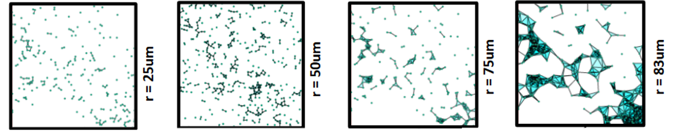

Complejo de Vietoris–Rips
1 Recordatorio: Complejo de Vietoris–Rips
Una de las ideas centrales de TDA consiste en transformar una nube de puntos en un objeto geométrico sobre el cual puedan estudiarse propiedades topológicas.
En nuestro contexto, cada muestra biológica se representa mediante las coordenadas espaciales de las células identificadas en una imagen de tejido tumoral. A partir de estas coordenadas construimos un complejo de Vietoris–Rips, que será la base para calcular homología persistente.
1.1 Construcción
Dado un conjunto de puntos (X) y un parámetro de escala \[(\varepsilon)\]:
- Dos puntos se conectan si su distancia es menor o igual que \[2(\varepsilon)\].
- Tres puntos mutuamente conectados generan un triángulo.
- Cuatro puntos mutuamente conectados generan un tetraedro.
- El procedimiento continúa de forma análoga en dimensiones superiores.
1.2 Definición
Dado un conjunto de puntos (X) y un parámetro de escala (), el complejo de Vietoris–Rips se construye conectando puntos que se encuentran suficientemente cerca entre sí.
En términos generales:
- Dos puntos cercanos generan una arista.
- Tres puntos mutuamente conectados generan un triángulo.
- Cuatro puntos mutuamente conectados generan un tetraedro.
Formalmente,
\[ VR_{\varepsilon}(X) = \left\{ \sigma \subseteq X : d(x_i,x_j)\leq 2 \varepsilon \quad \forall x_i,x_j\in\sigma \right\}. \]
1.3 Efecto del parámetro de escala
Al variar \(\varepsilon\), la estructura del complejo cambia:
- Para valores pequeños aparecen componentes aisladas.
- Conforme aumenta \(\varepsilon\), comienzan a formarse conexiones.
- A escalas intermedias pueden aparecer ciclos.
- Para valores grandes muchas estructuras terminan fusionándose.
Este comportamiento multiescala constituye la base de la homología persistente.
1.4 Ejemplo visual

Evolución de un complejo de Vietoris–Rips conforme aumenta el parámetro de escala \(\varepsilon\).
1.5 Aplicación en este workshop
En este trabajo construiremos complejos de Vietoris–Rips utilizando las coordenadas espaciales de subconjuntos celulares obtenidos a partir de imágenes de tejido tumoral.
A partir de estos complejos calcularemos homología persistente en dimensiones:
- (H_0): componentes conexas.
- (H_1): ciclos.
Estas estructuras nos permitirán caracterizar patrones de organización celular presentes en el microambiente tumoral.
2 Implementación computacional
Hasta ahora hemos introducido los conceptos fundamentales del complejo de Vietoris–Rips y la homología persistente. A continuación veremos cómo construir estos objetos a partir de datos reales utilizando Python y la biblioteca GUDHI.
Trabajaremos con coordenadas celulares obtenidas a partir de imágenes de tejido tumoral. Nuestro objetivo será recorrer paso a paso el flujo completo de análisis, desde una nube de puntos hasta la obtención de un diagrama de persistencia.
2.1 Objetivos
En esta sección aprenderemos a:
- Cargar coordenadas celulares y construir una nube de puntos (point cloud).
- Construir un complejo de Vietoris–Rips a partir de dichas coordenadas.
- Calcular la homología persistente.
- Visualizar el diagrama de persistencia resultante.
- Guardar los resultados para análisis posteriores.
Este procedimiento constituye el pipeline básico de TDA que posteriormente utilizaremos para comparar múltiples muestras biológicas.
2.2 Importar bibliotecas
En esta etapa construiremos complejos simpliciales y homología persistente a partir de datos espaciales.
Utilizaremos las siguientes bibliotecas:
ospara manejo de archivos y rutas.numpypara operaciones numéricas.pandaspara manipulación de datos tabulares.matplotlibpara visualización de resultados.gudhipara la construcción de complejos de Vietoris–Rips y homología persistente.
import os
import numpy as np
import pandas as pd
import matplotlib.pyplot as plt
import gudhi as gdPrimero trabajaremos con una única muestra para entender cada paso del proceso. Una vez comprendido el pipeline completo, lo automatizaremos para procesar múltiples muestras de manera simultánea.
2.3 Cargar datos
El primer paso consiste en cargar las coordenadas espaciales de las células que fueron obtenidas durante el proceso de segmentación.
Trabajaremos con un archivo CSV que contiene, entre otras variables, las coordenadas de los centroides celulares:
X_centroidY_centroid
Cada fila representa una célula y sus coordenadas dentro de la imagen.
A partir de estas coordenadas construiremos una nube de puntos (point cloud), que será la entrada para el análisis topológico.
La siguiente celda carga el archivo, extrae las coordenadas y las organiza en una matriz denominada puntos, donde cada fila corresponde a una célula y cada columna a una coordenada espacial.
ruta = "https://raw.githubusercontent.com/HaydeePeruyero/tda-cell-patterns-workshop/main/data/carcinoma_FA_HN14_2.csv"
df = pd.read_csv(ruta)
x = df["X_centroid"].to_numpy()
y = df["Y_centroid"].to_numpy()
puntos = np.column_stack((x, y))
print(f"Número de puntos: {len(puntos)}")2.4 Visualización de la nube de puntos
Una vez cargadas las coordenadas, es conveniente visualizar la distribución espacial de las células antes de realizar cualquier análisis topológico.
Cada punto de la gráfica representa una célula identificada en el tejido. Esta representación constituye la nube de puntos (point cloud) sobre la cual construiremos posteriormente el complejo de Vietoris–Rips.
La siguiente celda genera una visualización simple de las coordenadas celulares.
plt.figure(figsize=(6,6))
plt.scatter(x, y, s=5)
plt.title("Point Cloud (centroides celulares)")
plt.xlabel("X")
plt.ylabel("Y")
plt.show()2.5 Construcción del complejo de Vietoris–Rips
A partir de la nube de puntos se construye un complejo de Vietoris–Rips para una secuencia de valores del parámetro de escala \[(\varepsilon)\]. Al variar este parámetro, la conectividad entre las células cambia progresivamente, generando una familia de complejos simpliciales que describe la organización espacial de la muestra a múltiples escalas.
Esta secuencia de complejos constituye una filtración, sobre la cual se calcula posteriormente la homología persistente.
En este ejemplo utilizaremos inicialmente:
- \[ \varepsilon = 100\ \]
- dimensión máxima = 2
La biblioteca GUDHI permite construir el complejo y almacenarlo en una estructura denominada simplex_tree, que posteriormente utilizaremos para calcular homología persistente.
radio = 100
rips_complex = gd.RipsComplex(
points=puntos,
max_edge_length=radio
)
simplex_tree = rips_complex.create_simplex_tree(
max_dimension=2
)
print("Número de simplices:", simplex_tree.num_simplices())2.6 Visualización del complejo de Vietoris–Rips
Aunque el complejo de Vietoris–Rips se define como un objeto combinatorio, resulta útil visualizar sus conexiones para comprender cómo la información geométrica de la nube de puntos se transforma en una estructura topológica.
Esta representación permite identificar visualmente regiones altamente conectadas, posibles agrupamientos y estructuras que podrían dar origen a ciclos topológicos.
plt.figure(figsize=(8,6))
plt.scatter(x, y, color="black", s=5)
for simplex in simplex_tree.get_skeleton(1):
if len(simplex[0]) == 2:
i, j = simplex[0]
plt.plot(
[x[i], x[j]],
[y[i], y[j]],
color="gray",
linewidth=0.5
)
plt.title(f"Complejo de Rips (r={radio})")
plt.xlabel("X")
plt.ylabel("Y")
plt.show()2.7 Homología persistente
Hasta ahora hemos construido y visualizado un complejo de Vietoris–Rips para un valor fijo del parámetro de escala (r).
Sin embargo, una de las ideas centrales de TDA es que la elección de una única escala puede ocultar información relevante. En lugar de analizar un solo complejo, la homología persistente estudia cómo evolucionan las estructuras topológicas cuando el parámetro de escala aumenta progresivamente.
Durante este proceso pueden ocurrir distintos eventos:
- Componentes conexas que aparecen y posteriormente se fusionan.
- Ciclos que nacen al formarse conexiones entre puntos.
- Ciclos que desaparecen cuando regiones vacías terminan rellenándose.
La homología persistente registra estos eventos mediante pares ((birth, death)), que indican la escala en la que una característica topológica aparece y la escala en la que desaparece.
En este taller nos centraremos principalmente en:
- (H_0): componentes conexas.
- (H_1): ciclos o bucles.
La biblioteca GUDHI permite calcular automáticamente estas características a partir del complejo construido previamente.
diag = simplex_tree.persistence()
print("Primeros valores:")
print(diag[:10])2.8 Diagrama de persistencia
Una vez calculada la homología persistente, necesitamos una forma de resumir toda la información obtenida durante la filtración.
Para ello utilizamos el diagrama de persistencia, una representación gráfica donde cada punto corresponde a una característica topológica detectada en los datos.
En este diagrama:
- El eje horizontal (Birth) indica la escala en la que aparece una característica.
- El eje vertical (Death) indica la escala en la que desaparece.
- Cada punto representa una componente conexa ((H_0)) o un ciclo ((H_1)).
- Cuanto más alejado esté un punto de la diagonal, mayor será su persistencia y, potencialmente, su relevancia topológica.
De esta forma, el diagrama de persistencia resume cómo evoluciona la estructura topológica de la nube de puntos a diferentes escalas.
Generación del diagrama
El siguiente código permite visualizar el diagrama de persistencia obtenido a partir del complejo de Vietoris–Rips construido previamente.
plt.figure(figsize=(6,6))
gd.plot_persistence_diagram(diag)
plt.title("Diagrama de persistencia")
plt.show()2.9 Guardar resultados
El diagrama de persistencia es una representación gráfica muy útil para visualizar las características topológicas de una muestra. Sin embargo, para realizar comparaciones sistemáticas entre múltiples muestras resulta conveniente almacenar esta información en formato tabular.
Por ello, extraeremos para cada característica topológica:
- su dimensión ((H_0), (H_1), etc.),
- el valor de nacimiento (birth),
- el valor de muerte (death).
Esta tabla será la entrada para las siguientes etapas del análisis, donde calcularemos distancias entre diagramas de persistencia y construiremos matrices de similitud entre muestras.
Construcción de la tabla
El siguiente código convierte el diagrama de persistencia en un DataFrame de pandas.
output = pd.DataFrame(
[[dim, b, d] for dim, (b, d) in diag if dim <= 2],
columns=["dimension", "birth", "death"]
)
output.head()2.10 Resumen
A partir de las coordenadas celulares hemos construido:
- Una nube de puntos.
- Un complejo de Vietoris–Rips.
- La homología persistente.
- Un diagrama de persistencia.
- Una tabla con las características topológicas detectadas.
Hasta este punto hemos trabajado únicamente con una muestra. Sin embargo, en aplicaciones reales normalmente disponemos de múltiples muestras biológicas y necesitamos repetir exactamente el mismo procedimiento para cada una de ellas.
Afortunadamente, no es necesario ejecutar manualmente el análisis archivo por archivo. Podemos automatizar el proceso utilizando ciclos (for) y aplicar el pipeline completo a todos los archivos de una carpeta.
En teoría, todo lo necesario para construir este análisis ya ha sido presentado en las secciones anteriores. El siguiente ejercicio consiste en completar un script que procese automáticamente múltiples muestras y genere un diagrama de persistencia para cada una de ellas.
3 Ejercicio: procesar múltiples muestras
El siguiente esquema muestra la lógica general del proceso:
archivo_1.csv
│
▼
Point Cloud
▼
Complejo Rips
▼
Homología
▼
Diagrama
▼
archivo_1_diag.csvarchivo_2.csv
│
▼
Point Cloud
▼
Complejo Rips
▼
Homología
▼
Diagrama
▼
archivo_2_diag.csv...Complete los espacios faltantes
import os
import requests
import numpy as np
import pandas as pd
import gudhi as gd
# ============================================================
# 1. OBTENER LISTA DE ARCHIVOS DESDE GITHUB
# ============================================================
api_url = (
"https://api.github.com/repos/"
"HaydeePeruyero/tda-cell-patterns-workshop/contents/data"
)
contenido = requests.get(api_url).json()
archivos = sorted([
f["name"]
for f in contenido
if f["name"].endswith(".csv")
])
print("Archivos encontrados:")
for archivo in archivos:
print("-", archivo)
# ============================================================
# 2. RUTA RAW DE GITHUB
# ============================================================
ruta = (
"https://raw.githubusercontent.com/"
"HaydeePeruyero/tda-cell-patterns-workshop/main/data/"
)
# ============================================================
# 3. CREAR CARPETA DE SALIDA
# ============================================================
os.makedirs("resultados", exist_ok=True)
# ============================================================
# 4. PROCESAR TODOS LOS ARCHIVOS
# ============================================================
for archivo in archivos:
print(f"\nProcesando: {archivo}")
# -------------------------
# Cargar datos
# -------------------------
df = __________________
# -------------------------
# Coordenadas
# -------------------------
x = __________________
y = __________________
# -------------------------
# Nube de puntos
# -------------------------
puntos = __________________
# -------------------------
# Complejo de Rips
# -------------------------
rips_complex = _____________
simplex_tree = ______________
# -------------------------
# Homología persistente
# -------------------------
diag = __________________
# -------------------------
# Convertir a DataFrame
# -------------------------
output = pd.DataFrame(
[[dim, b, d] for dim, (b, d) in diag if dim <= 2],
columns=["dimension", "birth", "death"]
)
# -------------------------
# Guardar resultado
# -------------------------
nombre_salida = __________________
output.to_csv(
os.path.join("resultados", nombre_salida),
index=False
)
print(f"Guardado: {nombre_salida}")import os
import requests
import numpy as np
import pandas as pd
import gudhi as gd
# ============================================================
# 1. OBTENER LISTA DE ARCHIVOS DESDE GITHUB
# ============================================================
api_url = (
"https://api.github.com/repos/"
"HaydeePeruyero/tda-cell-patterns-workshop/contents/data"
)
contenido = requests.get(api_url).json()
archivos = sorted([
f["name"]
for f in contenido
if f["name"].endswith(".csv")
])
print("Archivos encontrados:")
for archivo in archivos:
print("-", archivo)
# ============================================================
# 2. RUTA RAW DE GITHUB
# ============================================================
ruta = (
"https://raw.githubusercontent.com/"
"HaydeePeruyero/tda-cell-patterns-workshop/main/data/"
)
# ============================================================
# 3. CREAR CARPETA DE SALIDA
# ============================================================
os.makedirs("resultados", exist_ok=True)
# ============================================================
# 4. PROCESAR TODOS LOS ARCHIVOS
# ============================================================
for archivo in archivos:
print(f"\nProcesando: {archivo}")
# -------------------------
# Cargar datos
# -------------------------
df = pd.read_csv(ruta + archivo)
# -------------------------
# Coordenadas
# -------------------------
x = df["X_centroid"].to_numpy()
y = df["Y_centroid"].to_numpy()
# -------------------------
# Nube de puntos
# -------------------------
puntos = np.column_stack((x, y))
print(f"Número de puntos: {len(puntos)}")
# -------------------------
# Complejo de Rips
# -------------------------
rips_complex = gd.RipsComplex(
points=puntos,
max_edge_length=50
)
simplex_tree = rips_complex.create_simplex_tree(
max_dimension=2
)
# -------------------------
# Homología persistente
# -------------------------
diag = simplex_tree.persistence()
# -------------------------
# Convertir a DataFrame
# -------------------------
output = pd.DataFrame(
[[dim, b, d] for dim, (b, d) in diag if dim <= 2],
columns=["dimension", "birth", "death"]
)
# -------------------------
# Guardar resultado
# -------------------------
nombre_salida = archivo.replace(".csv", "_diag.csv")
output.to_csv(
os.path.join("resultados", nombre_salida),
index=False
)
print(f"Guardado: resultados/{nombre_salida}")